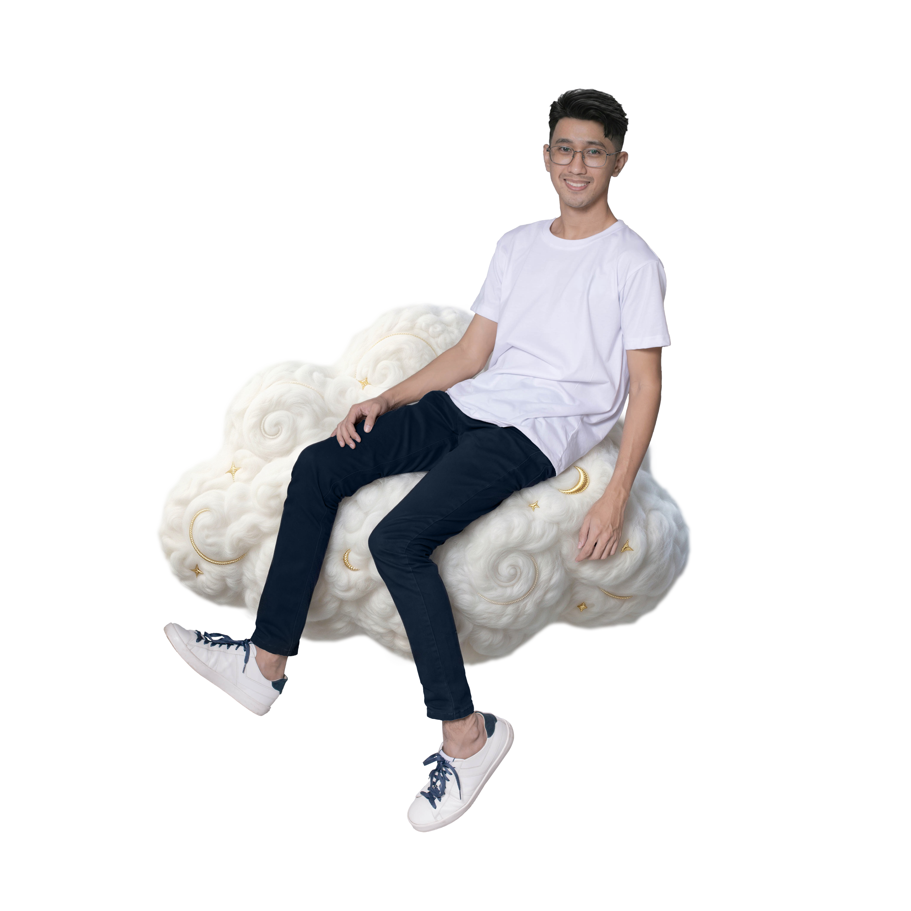

Hello, I'm
Justine
I turn raw real estate photos into bright, market-ready images that help listings sell faster.
Hello, I'm
I turn raw real estate photos into bright, market-ready images that help listings sell faster.

About me
I’m Justine, a Cebu-based Real Estate Photo Editor with 3 years of experience transforming property photos into premium visual assets.
Holding a degree/background in Information Technology, I blend a sharp eye for detail with strong technical problem-solving skills. My career began in fast-paced retail and food service environments, which shaped my strong work ethic and commitment to client satisfaction.
I’m dedicated to delivering crisp, vibrant, and market-ready images that help you sell faster. Off the clock, I stay sharp and energized by lifting weights and staying active.
Expert lens correction, color balancing, and perspective adjustments for property photos.
Skin retouching, blemish removal, color grading, and enhancing professional portraits.
Digital furniture placement, interior styling, and scene enhancements to showcase a property.
Color correction & lens fix
Sky replacement
White balance & exposure fix
Lens & perspective correction
Brightness enhancement & color grading
Virtual staging
"Justine did a fantastic job for me!
I gave him some pictures in the fashion industry (Man Suits) which are a bit hard to do even if you shot it in a studio, as it is hard to get close to the natural colour but Justine did it!
He was available whenever we needed to change or tweak something! The communication was amazing!
I highly recommend Justine"